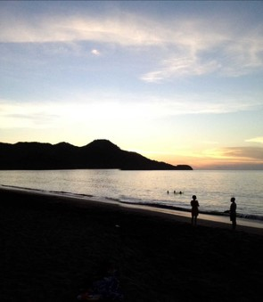
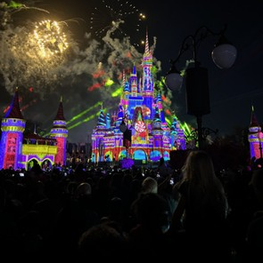
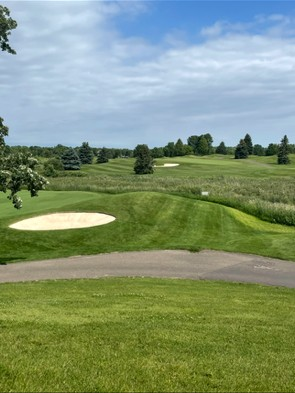
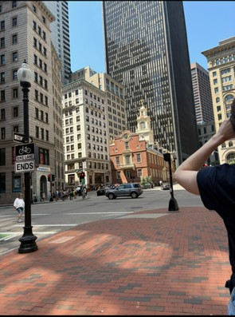
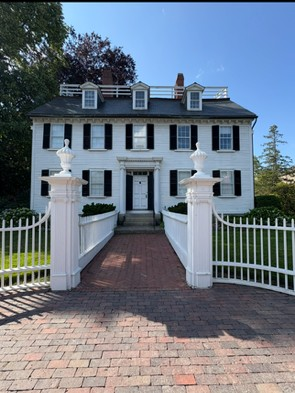
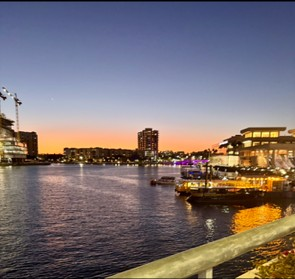

Places I've Traveled
This is a collection of photos from different places I have traveled! Each photo represents a moment from a different trip that allowed me to see more of our beautiful world and make some exciting memories with my friends and family along the way. My collection showcases my design skills and allows viewers to see how responsive design adapts to allow me to display my content across screens of all sizes.

Costa Rica
Family Trip | 2013
This is easily one of my favorite trips of all time. My family and I traveled to Guanacaste, Costa Rica for my older sister's wedding. We stayed at an all-inclusive resort that had some of the most incredile views and amazing food! There are several photos I could choose from this trip that highlight all of the fun and exciting things we did such as ziplining and swimming in the hot springs! This one is from a peaceful evening on the beach watching a beautiful sunset after a day of fun in the sun!

Disney World
Family Trip | 2022
This trip will forever be a favorite of mine! My family and I traveled to Orlando, Florida to take my niece to Disney World for her 4th birthday! I was almost as excited as she was as I had never visited before. Everything about our experience was incredible on this trip. From the rooms, to the food, to the insanely well-executed rides! This photo was taken at the end of our first night when the park shoots off fireworks to end the day!

Minneapolis
Friend Trip | 2024
This trip was a blast and one for the books! Some friends and I visited Minneapolis, Minnesota to attend a professional softball tournament. Most of my friends and I are all very competetive and highly interested in any and all sporting events, so we couldn't miss the opportunity to hit a local golf course while we were in the area. Golfing is one of my favorite hobbies and something I have done for the majority of my life, so getting to enjoy a beautiful course with close friends is one I will remember forever!

Boston
Friend Trip | 2025
Visiting Boston was definitely high on my bucket list, so this trip is a very memorable one for me! A group of friends and I traveled to do tourist things around the city and attend a Red Sox game. Getting to see Fenway Park and all of the insanely cool historical landmarks easily became some of my favorite trip memories ever! This photo was taken on one part of the Freedom Trail! Highly recommend if you enjoy history and cool buildings!

Salem
Friend Trip | 2025
Our day trip to Salem, Massachusetts was an incredible leg of our trip to Boston. This one in particular was my idea as I love all things spooky and Halloween! I knew the moment we planned this trip that this was something I wanted to add to our itinerary. This photo was taken in front of the house that was used in the filming of "Hocus Pocus" which is one of my all-time favorite Halloween flicks! It was a cool experience to visit part of the original set!

Tampa
Family/Friend Trip | 2026
This trip was an unforgettable one! Tampa is one of my favorite places to visit! The weather and the food are some of the best you can experience! Texas Tech sports are near and dear to my family as we are lifelong Lubbock residents, so when the men's basketball team was selected to play in the Tampa region, we knew not buying tickets wasn't an option. This photo was taken right outside my favorite restaurant overlooking the river!